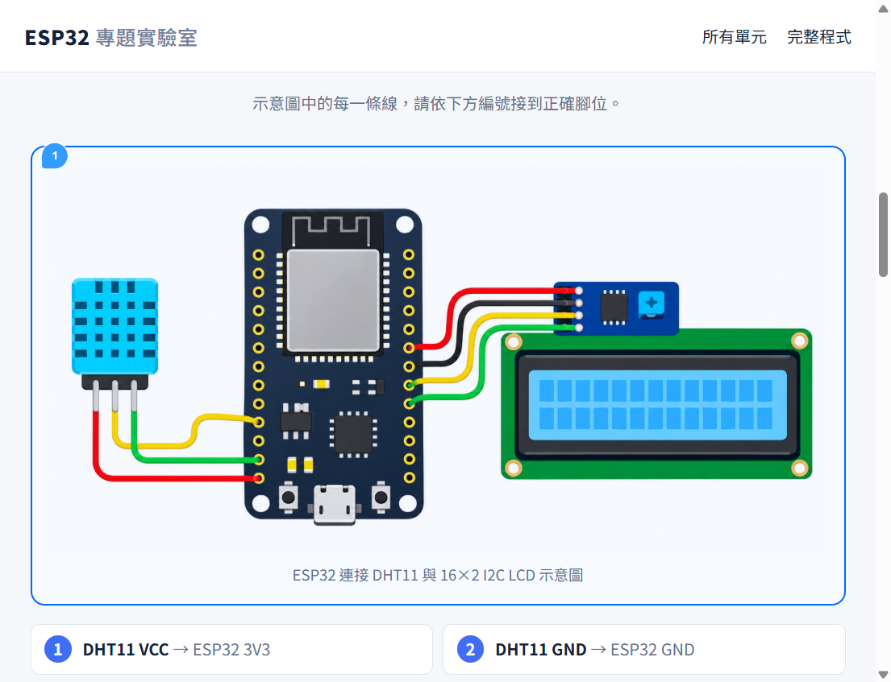

單元 02・環境感測入門
DHT11 溫溼度感測
副標題：使用 16×2 I2C LCD 即時顯示環境溫度與濕度。
步驟 1・準備材料
四個主要元件
ESP32開發板 × 1
擴充板ESP32 麵包板擴充底板 × 1
DHT11三腳模組 × 1
16×2 LCD含 I2C 背板 × 1
步驟 2・安全接線
電源接擴充板，訊號接 GPIO
ESP32 插在擴充板上。DHT11 與 LCD 的 VCC、GND 分別接擴充板旁的正（+）與負（−）電源軌；DATA、SDA、SCL 訊號線才接 ESP32 的 GPIO。
DHT11 溫溼度感應器
VCC → 擴充板 + 正電源軌
GND → 擴充板 − 負電源軌
DATA → ESP32 GPIO 4
三腳 DHT11 模組通常已內建上拉電阻。16×2 I2C LCD 背板
VCC → 擴充板 + 正電源軌
GND → 擴充板 − 負電源軌
SDA → ESP32 GPIO 21
SCL → ESP32 GPIO 22
接線示意圖
ESP32 擴充板接線位置
DHT11 與 LCD 的 VCC、GND 共接擴充板旁的正負電源軌；三條訊號線接 ESP32 GPIO。

DHT11 溫溼度感應器
- 1VCC → 擴充板電源軌 3.3V
- 2GND → 擴充板電源軌 GND
- 3DATA → ESP32 GPIO 4
16×2 I2C LCD 背板
- 4GND → 擴充板電源軌 GND
- 5VCC → 擴充板電源軌 3.3V
- 6SDA → ESP32 GPIO 21
- 7SCL → ESP32 GPIO 22
步驟 3・安裝函式庫與上傳
完整 Arduino 程式
請在 Arduino IDE 的「程式庫管理員」依序安裝以下三個函式庫：
- DHT sensor library作者：Adafruit
- Adafruit Unified Sensor作者：Adafruit
- hd44780作者：Bill Perry
hd44780 會自動偵測常見 I2C LCD 背板的位址與接腳配置。
#include <Wire.h>
#include <DHT.h>
#include <hd44780.h>
#include <hd44780ioClass/hd44780_I2Cexp.h>
// DHT11 設定
#define DHTPIN 4
#define DHTTYPE DHT11
DHT dht(DHTPIN, DHTTYPE);
// 自動偵測 I2C LCD 的位址與背板接腳配置
hd44780_I2Cexp lcd;
void setup() {
Serial.begin(115200);
dht.begin();
// ESP32 I2C：SDA = GPIO 21，SCL = GPIO 22
Wire.begin(21, 22); // SDA = GPIO 21，SCL = GPIO 22
int lcdStatus = lcd.begin(16, 2);
if (lcdStatus) {
Serial.print("LCD init failed, code: ");
Serial.println(lcdStatus);
while (true) {
delay(1000); // LCD 初始化失敗時停止程式
}
}
lcd.backlight();
lcd.setCursor(0, 0);
lcd.print("DHT11 Monitor");
lcd.setCursor(0, 1);
lcd.print("Starting...");
delay(1500);
lcd.clear();
}
void loop() {
float humidity = dht.readHumidity();
float temperature = dht.readTemperature();
if (isnan(humidity) || isnan(temperature)) {
lcd.clear();
lcd.setCursor(0, 0);
lcd.print("Sensor Error");
lcd.setCursor(0, 1);
lcd.print("Check DHT11");
Serial.println("DHT11 read failed");
delay(2000);
return;
}
Serial.print("Temperature: ");
Serial.print(temperature, 1);
Serial.print(" C Humidity: ");
Serial.print(humidity, 1);
Serial.println(" %");
lcd.setCursor(0, 0);
lcd.print("Temp: ");
lcd.print(temperature, 1);
lcd.print((char)223); // 度數符號
lcd.print("C ");
lcd.setCursor(0, 1);
lcd.print("Humi: ");
lcd.print(humidity, 1);
lcd.print("% ");
delay(2000); // DHT11 最少每 2 秒讀取一次
}步驟 4・故障排查
常見狀況這樣處理
LCD 初始化失敗或無法顯示
先調整 LCD 背面的藍色可變電阻（對比）。接著在 Arduino IDE 開啟：File → Examples → hd44780 → ioClass → hd44780_I2Cexp → I2CexpDiag，上傳診斷程式檢查 I2C 接線、位址與 LCD 背板。
LCD 發熱或完全不亮
立刻斷電。優先檢查 VCC、GND 是否接反或短路。這通常不是程式問題；若重新接線仍快速發熱，LCD 可能已損壞。
序列埠出現 DHT11 read failed
確認 DATA 接 GPIO 4、VCC 接 3V3、GND 共地。若是裸 DHT11 而非模組，DATA 與 VCC 之間需加約 10kΩ 上拉電阻。